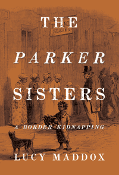

<body bgcolor="#FFFFFF" text="#000000" link="#0000FF" vlink="#CC0000" alink="#CC0000"><center><hr width="350" size="1" align="center" noshade>The remarkable story of an 1850s kidnapping of two free black girls in rural Pennsylvania after the passage of the Fugitive Slave Act<hr width="350" size="1" align="center" noshade><p><a href="https://cdcshoppingcart.uchicago.edu/Cart/ChicagoBook.aspx?ISBN=&&PRESS=temple" target="_top">Buy this book!</a> | <a href="https://cdcshoppingcart.uchicago.edu/Cart/Cart.aspx?PRESS=temple" target="_top">View Cart</a> | <a href="https://cdcshoppingcart.uchicago.edu/Cart/Cart.aspx?PRESS=temple" target="_top">Check Out</a></p><p></p></center><!--none//--><h1 class = "booktitle">The Parker Sisters</h1> <h1 class = "subtitle">A Border Kidnapping</h1>
<h3>Lucy Maddox</h3>
<p class="info">cloth: $28.50, Jan 16<BR>EAN:&nbsp;978-1-4399-1318-5<BR><font color=#990033>Available</FONT><font size=-7><br>&nbsp;</font></p><p class="info">e-book: $28.50, Jan 16<BR>EAN:&nbsp;978-1-4399-1320-8<BR><font color=#990033>Available</FONT><font size=-7><br>&nbsp;</font></p></p></td></tr></table>
<BR> <p class="info">256 pp<BR> 6.125 x 9<BR> 5 halftones, 1 maps <p class="info"><font size=-7>&nbsp;</font></p><p class="info">
</P><BLOCKQUOTE><p>
<i>"</i>The Parker <i>Sisters&nbsp;impresses by the breadth and depth of Lucy Maddox's impeccable research as well as by its engaging, at times genuinely suspenseful writing. The brisk narrative of the kidnapping of two free black sisters across the Mason-Dixon Line comes to life here, as it is anchored in newspaper coverage and records of legal as well as extralegal procedures. Maddox is a skillful historian who enters a single case so fully that the Fugitive Slave Act becomes understandable in a very direct way-as does the history of these borderlands and the meaning of emancipation for the lives of the protagonists. This is an outstanding book."-</i><b>Werner Sollors</b>,&nbsp;Henry B. and Anne M. Cabot Research Professor of English Literature,&nbsp;Harvard University, and author of <i>African American Writing: A Literary Approach</i>
<br></BLOCKQUOTE>
<p>
In 1851, Elizabeth Parker, a free black child in Chester County, Pennsylvania, was bound and gagged, snatched from a local farm, and hurried off to a Baltimore slave pen. Two weeks later, her teenage sister, Rachel, was abducted from another Chester County farm. Because slave catchers could take fugitive slaves and free blacks across state lines to be sold, the border country of Pennsylvania/Maryland had become a dangerous place for most black people.<br>
<p>In <i>The Parker Sisters, </i>Lucy Maddox gives an eloquent, urgent account of the tragic kidnapping of these young women. Using archival news and courtroom reports, Maddox tells the larger story of the disastrous effect of the Fugitive Slave Act on the small farming communities of Chester County and the significant, widening consequences for the state and the nation. <br>
<p><i>The Parker Sisters </i>is also a story about families whose lives and fates were deeply embedded in both the daily rounds of their community and the madness and violence consuming all of antebellum America. Maddox's account of this horrific and startling crime reveals the strength and vulnerability of the Parker sisters and the African American population.
<br>
<P CLASS="top"><A HREF="#top">BACK TO TOP</A></P>&nbsp;<h2 class="inpageheading"><A NAME="excerpt"></a>Excerpt</h2><p>
Read the Introduction (pdf).
<br>
<P CLASS="top"><A HREF="#top">BACK TO TOP</A></P>
<BR>&nbsp;
<h2 class="inpageheading"><A NAME="reviews"></a>Reviews</h2>
<p>
<i>"</i>The Parker Sisters<i>&nbsp;is a real page-turner. Maddox tells a remarkable story-in fact, a set of interconnected stories-interweaving them in a suspenseful way. Maddox provides a very different perspective on the domestic slave trade, revealing both the vulnerability and the strength of the African American population. People betray one another and stand by one another-and the lines of race and of free and enslaved status are often blurred. A great many characters take part in this complex tale of abduction, murder, courtroom drama, behind-the-scenes deal making, and general lawlessness. The Parker Sisters&nbsp;is a riveting read!</i>"-<b>Julie Winch</b>, Professor of History, University of Massachusetts, Boston, and author of&nbsp;<i>Between Slavery and Freedom: Free People of Color in America from Settlement to the Civil War</i>
<br>
<p>
<i>"In this compact and engrossing story, Maddox uses the 1851 kidnappings of Elizabeth and Rachel Parker in Pennsylvania to demonstrate how antebellum slavery transcended state boundaries.... Maddox expertly contextualizes the Parker kidnappings, keeping her eye on the larger legal and political issues.... [She] dramatically renders the subsequent legal trials in thrilling detail, yet never loses sight of the kidnappings' historical importance in the deep divisions among Americans regarding slavery and abolition."
<br /></i><b>-Publishers Weekly</b>
<br>
<p>
<i>"Maddox relates a gripping narrative of two free African American girls in mid-19th-century Pennsylvania.... The use of primary sources such as diaries and newspapers enriches the account of the Parker girls, their kidnappings and entry into slavery via Baltimore and then New Orleans, as well as the resulting trials. VERDICT: This book should be read by all who have an interest in freedom and civil rights. There is much to learn about the history of slavery that is still being discovered by historians such as Maddox."</i><b><i>-Library Journal </i></b><b>(starred review)</b>
<br>
<p>
<i>"[A] thoroughly researched account of...the abduction of the sisters Elizabeth and Rachel Parker.... Maddox places the incident within the context of both the sectional conflict, particularly with the passage of the Fugitive Slave Law, and the experiences of the Parker family over several generations.... The author is sensitive to the nuances of race relations and antislavery sentiment in the North.... In all, the book is a masterful recreation of events, based on extensive use of primary sources. The kidnapping of the Parker sisters is a story worthy of this effort." </i><b>--Pennsylvania Heritage</b>
<br>
<p>
<i>"Maddox focus[es] on the kidnapping of free blacks in the pre-Civil War North, illuminating a little-known but tragic aspect of antebellum US history.... Maddox demonstrates that the resulting furor can mostly be attributed to Northern reactions to the infamous Fugitive Slave Act of 1850 and the acrimony between Maryland and Pennsylvania over fugitive slaves and the kidnapping of free African Americans.... Maddox ha[s] performed Herculean tasks by scouring newspapers, court records, and secondary works to bring to light aspects of slavery and race relations that often pass unnoticed in most accounts of life in the antebellum US."</i> <b>--Choice</b>
<br>
<p>
<i>"Maddox eloquently tells the tragic story of human trafficking along the Pennsylvania-Maryland border." </i><b>-Main Line Today</b>
<br>
<P CLASS="top"><A HREF="#top">BACK TO TOP</A></P>&nbsp;<P>
<h2 class="inpageheading"><A NAME="contents"></a>Contents</h2><P><SPAN STYLE="font-family: 'Verdana';font-size: 13px;" >1. Introduction<BR>2. The Line<BR>3. The Parkers&rsquo; World<BR>4. Border Justice<BR>5. Elizabeth&rsquo;s Story<BR>6. Baltimore<BR>7. Legal Justice<BR>8. Freedom<BR>9. Afterward<BR><BR>Acknowledgments<BR>Appendix<BR>Notes<BR>Bibliography<BR>Index</SPAN></P>
<P CLASS="top"><A HREF="#top">BACK TO TOP</A></P>
</P><BR>&nbsp;
<H2 class="inpageheading"><A NAME="author bio"></a>About the Author(s)</H2><p>
<b>Lucy Maddox</b> is Professor Emerita of English and American Studies at Georgetown University. She is the author of<i> Removals: Nineteenth-Century American Literature and the Politics of Indian Affairs</i> and <i>Citizen Indians: Native American Intellectuals, Race, and Reform</i>.
<br>
<P CLASS="top"><A HREF="#top">BACK TO TOP</A></P>
<p><h2 class="inpageheading"><A NAME="subjects"></a>Subject Categories</h2><P><A HREF="/tempress/african.html" TARGET="_top">African American Studies</a><BR><P><A HREF="/tempress/history.html" TARGET="_top">History</a><BR><P><A HREF="/tempress/philly.html" TARGET="_top">Philadelphia Region</a></P></P>
</p>
<P>
</P>
<p align="center"><a href="https://cdcshoppingcart.uchicago.edu/Cart/ChicagoBook.aspx?ISBN=&&PRESS=temple" target="_top">Buy this book!</a> | <a href="https://cdcshoppingcart.uchicago.edu/Cart/Cart.aspx?PRESS=temple" target="_top">View Cart</a> | <a href="https://cdcshoppingcart.uchicago.edu/Cart/Cart.aspx?PRESS=temple" target="_top">Check Out</a></p><p><font face="Arial" size="1"><a href="copyright.html" onMouseOver="window.status='Web Copyright Policy';return true;" onMouseOut="window.status=''" title="Web Copyright Policy">&copy;</a> 2016 <a href="http://www.temple.edu" target="new" onMouseOver="window.status='Link to Temple University home page';return true;" onMouseOut="window.status=''" title="Link to Temple University home page">Temple University</a>. All Rights Reserved. http://www.temple.edu/tempress/titles/2387_reg.html</font></p>